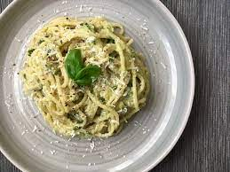

Avocado Pasta

Description
Recipe for 4 people who eat moderately large portions.
Ingredients
- Pasta 600-700g (dry weight)
- 3-4 Big avocados
- Peccorino cheese 60-80g
- Parmeggiano cheese 60-80g
- 1-2 chilis
- 2 limes
- 2-4 garlic claws
- Black pepper
- Salt
- Olive oil
- Basil
Steps
- Put water boiling for pasta in water heater or pot.
- Chop chilis and garlic small, put them to a mixing bowl.
- Pour olive oil, black pepper and salt to bowl. Use salt according to how much cheese you intend to use as cheese enhances saltiness.
- Pour lime juice to the bowl with other ingridients.
- Chop and add avocados to bowl, mix well with other ingridients. Avocados can be either paste like or more solid depending on preference.
- Add salt to the boiling water in the pot. Take 1-2 dl of water from pot and add it to the mixing bowl.
- Add pasta to to the pot. Boil al dente.
- Add pecornio and parmegiano to the mixing bowl, mix well with other ingridients with wooden spoon. Leave some cheese to be added on top of the pasta portions.
- Cut and add few basil leaves to the mixing bowl.
- Mix bit by bit pasta to the mixing bowl and mix pasta with other ingridients. Be careful not to add too much pasta to avoid having poor pasta-to-sauce ratio.
- Serve immediately with cheese, the sauce gets quite black fast in freezer so it's not recommended.